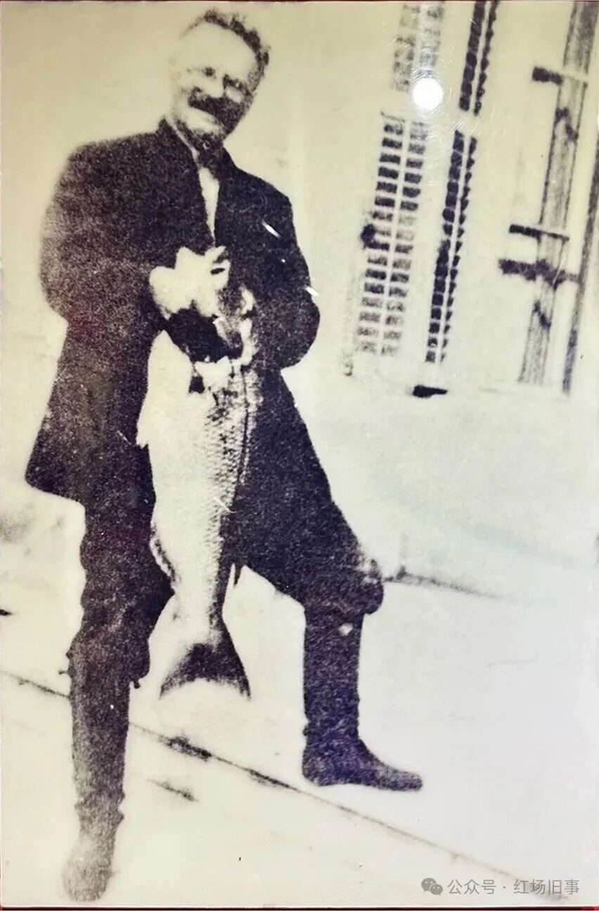
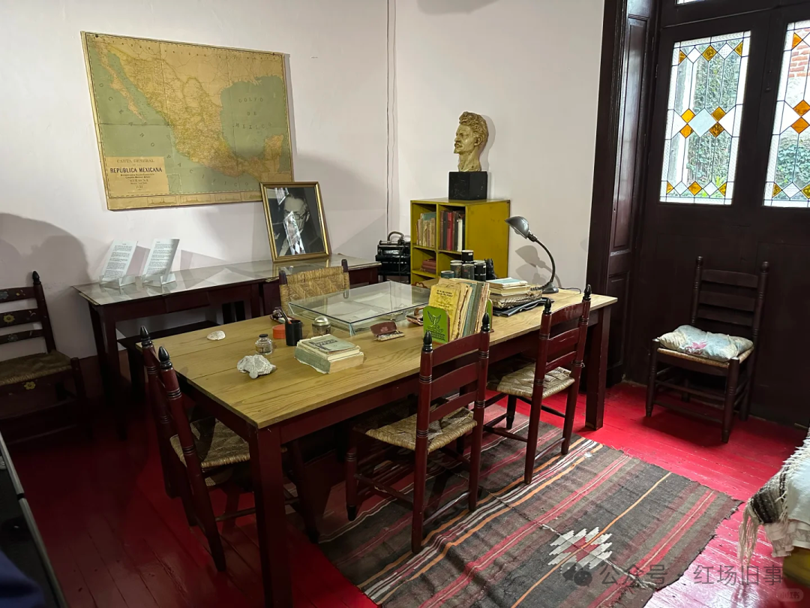

楔子：1940年墨西哥城的致命冰镐1940年8月20日下午，墨西哥城科约阿坎区，维也纳街45号。这是一座被高墙和铁门围起来的白色小楼，门口有墨西哥警察和私人警卫双重把守。楼内住着一位61岁的老人，他曾在20年前指挥过百万红军，与列宁并肩领导过十月革命——列夫·托洛茨基。
61岁的托洛茨基正俯身在书桌前，阅读一篇年轻人带来的文章。这位年轻人叫拉蒙·梅尔卡德，化名“杰克逊”，自称是加拿大人，崇拜托洛茨基的思想，常来家中拜访。突然，托洛茨基发出一声撕裂般的惨叫。妻子娜塔莉亚冲进书房，看到终生难忘的一幕：丈夫满脸是血，踉跄着靠在门框上。墙上、桌上、地板上，鲜血飞溅。他艰难地说出一个词：“杰克逊……”警卫冲进来时，梅尔卡德已被制服。他挣扎着喊道：“他们绑架了我母亲！我是被逼的！”——这句话，成为揭开苏联官方背景的唯一线索。
拉蒙·梅尔卡德托洛茨基被送往医院，26小时后不治身亡。凶器是一把爬山用的冰镐，从后脑深深凿入颅骨。那个让斯大林二十年坐立不安的人，终于死了。
一、二十年追杀令：从流亡到死刑
托洛茨基与斯大林的对立，始于列宁逝世后的权力真空。托洛茨基是十月革命的“灵魂”，红军的缔造者。他主张“不断革命”，将革命推向世界；而斯大林更务实，主张“一国建成社会主义”。两人的路线之争，逐渐演变为你死我活的权力斗争。1927年，托洛茨基被开除出党。1929年，他被驱逐出苏联国境。此后11年，他辗转土耳其、法国、挪威，最后落脚墨西哥。但无论逃到哪里，内务部的影子始终尾随。

托洛茨基土耳其流亡期间的钓鱼场景1936年至1938年，莫斯科举行了三次震惊世界的“大审判”。布哈林、季诺维也夫、加米涅夫等一批老布尔什维克被处决，托洛茨基被缺席判处死刑。罪名包括：组织恐怖主义中心、阴谋刺杀斯大林、为纳粹德国服务。
二、潜伏布局：三年卧底，一镐致命
内务人民委员会的行动代号：“鸭子”。总指挥是苏达普拉托夫，后来在回忆录《特殊使命》中披露了全过程。关键棋子是一个叫拉蒙·梅尔卡德的西班牙人。他的母亲卡里达德是西班牙共产党人，与苏联情报机关关系密切。1937年，内务部招募了梅尔卡德，开始长达三年的潜伏训练。梅尔卡德的任务不是直接靠近托洛茨基，而是先接近他身边的人。1938年，他在巴黎结识了一位美国姑娘西尔维亚——哥伦比亚大学毕业生，狂热的托派分子。西尔维亚的妹妹是托洛茨基的秘书。梅尔卡德以“杰克逊”的身份与西尔维亚恋爱，成功通过她进入托洛茨基的社交圈。1939年，西尔维亚前往墨西哥为托洛茨基工作。梅尔卡德随后赶到，以“想接近伟大导师学习”为由，频繁出入托洛茨基家中。他表现得谦卑、虔诚，渐渐赢得警卫的信任。托洛茨基甚至让他看自己写的文章。三年。他在暗处，等待一个机会，此刻，这个机会来了！
三、现场疑云：冰镐下的26小时
1940年8月20日，梅尔卡德带着一篇自己的最新文章来到托洛茨基书房。据事后供述，他的雨衣里藏着冰镐、一把自动手枪和一把匕首。就在托洛茨基拿着手稿开始阅读时，梅尔卡德绕到他身后，举起冰镐狠狠砸下。但冰镐落下瞬间，托洛茨基微微偏头，凶器没有正中后脑中央，而是凿入颅骨侧后部。托洛茨基发出惨叫，猛然站起，鲜血迸溅。他扑向梅尔卡德，咬住他的手。警卫冲进来时，梅尔卡德已被制服。墨西哥警方在现场找到了那把冰镐——约30厘米长，手柄被锯短过，方便隐藏。上面的血迹与托洛茨基的血型相符。

暗杀现场-托洛茨基书房8月21日，托洛茨基在医院抢救的26小时里，里时而清醒时而昏迷，19时20分，因颅脑重伤，头盖骨破裂，托洛茨基停止了呼吸。
四、内务部善后：统一口径的二十年牢狱
梅尔卡德被捕后，内务部面临的最大风险，是他可能开口。但他没有。在墨西哥警方的审讯中，梅尔卡德迅速改口，不再提“母亲被绑架”，而是统一口径：“我是个人行动，对托洛茨基的政治立场失望。”他咬死了这个说法，整整20年。墨西哥法庭认为“个人行为”的理由“纯属天方夜谭”，但梅尔卡德始终未吐露一个字的内务部背景。他的母亲卡里达德在事发后乘火车逃往美国，辗转回到苏联。为何梅尔卡德敢于在墨西哥警方长达20年的关押中守口如瓶？苏达普拉托夫后来披露：内务部通过秘密渠道传递消息，承诺确保他和家人的安全，并保证他出狱后将得到最高荣誉。1960年5月6日，梅尔卡德服满20年刑期获释。几天后，一架苏联飞机将他接到莫斯科。在克里姆林宫，他被授予苏联英雄称号——苏联最高荣誉。此后，梅尔卡德化名“罗曼”在莫斯科生活，在马列研究所工作，后来前往古巴协助卡斯特罗改革监狱系统。1978年因癌症去世，骨灰安葬在孔策沃公墓，与克格勃精英为邻。
五、档案佐证：迟来的真相
苏联解体后，大量档案解密。俄罗斯联邦安全局档案馆中，“托洛茨基刺杀行动”卷宗逐渐浮出水面。文件证实：整个行动由内务人民委员会直接指挥，苏达普拉托夫任总指挥，梅尔卡德的母亲卡里达德协助联络。梅尔卡德被捕前，一辆内务部汽车一直停在托洛茨基家附近等待接应。那把冰镐的命运同样曲折。墨西哥警察萨拉斯从证物室拿走凶器，在他床下藏了40年。2005年，他的女儿试图出售冰镐，托洛茨基的外孙希望她捐给故居博物馆，双方未能达成协议。最终，冰镐被美国私人收藏家梅尔顿收购，2018年起在华盛顿国际间谍博物馆展出。
行凶凶器：冰镐互动推理托洛茨基之死，是苏联历史上最著名的政治暗杀。关于这次刺杀的影响，你怎么看？你认为，刺杀托洛茨基对苏联政局产生了多大影响？欢迎在评论区分享你的想法。下一期预告：佐尔格的最后预言1941年6月，东京。佐尔格向莫斯科发出特急电报：“德军将于6月22日进攻苏联，兵力部署完全查明。”六天后，550万德军全线压境，苏军溃败。佐尔格的情报为何被无视？如果苏联相信他，战争会不同吗？下期走进东京谍网，还原“红色谍王”最后的预言。